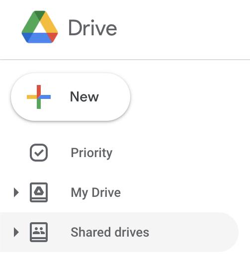
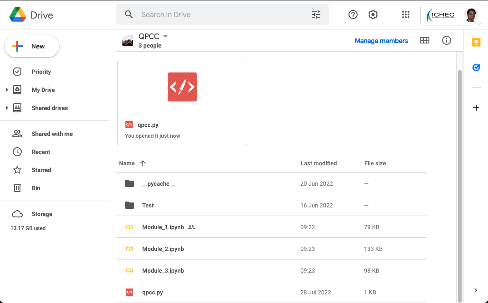
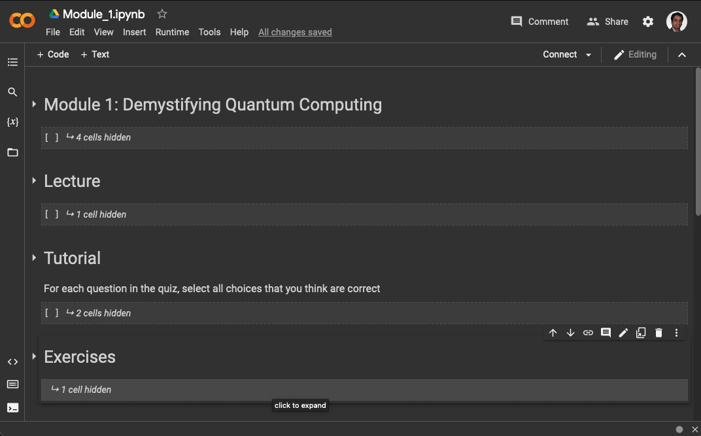
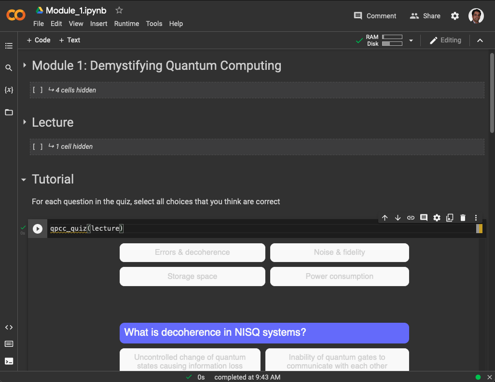
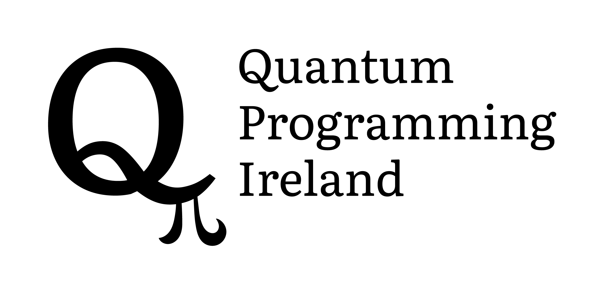

Quantum Programming Certification Course (QPCC)#
Outline of the course#
Quantum computing is seen as the next disruption in the world of computing and information processing. It will affect several sectors – public and private – including financial services, engineering and manufacturing, ICT, material sciences, pharmaceuticals, logistics and transport, environmental security, research organisations, public agencies, and Governments.
As business leaders or technical managers, if you have heard of quantum computing, and want to better prepare yourself and your organisation to deal with its potentials and impact, then this course is for you.
Business Leaders#
QPCC for Executives will inform you about the value proposition of quantum computing, value chain, ecosystem, capabilities, and development trends. You will be equipped to assess the impact of quantum computing for your sector and define suitable business strategies. The two sessions of this programme can be delivered back-to-back or spread over several days to suit the executives’ schedules. More details are available here.
Technical Managers#
QPCC for Managers will introduce practical skills including a landscape of quantum computing systems, algorithms, tools, and applications. The managers will be equipped to assess technology evolution, define use-cases, and create a roadmap for the necessary technical and skills development activities required for your organisations. More details about this pathway are available here.
Who can attend?#
This course is available for attendees from around the world and will be delivered through a blended learning mechanism - a combination of recorded lecture, live tutorial through video conference, and online supported exercise sessions.
Support and assistance#
Please write to qpcc@ichec.ie if you are interested in attending, or if you have any questions in relation to this course.
Information for attendees#
Setting up your access#
Create a new Google account dedicated for your attendance of QPCC. This is reccomended for security and privacy, in contrast to using an existing account.
Email your new Google account ID to qpcc@ichec.ie with the subject line
Google drive for QPCC. We will create a new QPCC drive with the course content for you and share it with your new Google account.This new QPCC drive can be found under
Shared drivesin your Google drive associated with the new Google account. The course content can be fully accessed in this drive, which includes a Jupyter notebook for each module. 
The Jupyter notebook for each module contains a lecture, tutorial and exercise content. 
Attending the course#
Open your QPCC drive from under the
Shared drivesin your new Google account.To attend a Module, open its corresponding Jupyter notebook. This will open a Colab notebook tab in your browser. Colab is Google’s online platform for working with Jupyter notebooks.
In the notebook, you will see a collection of
cells(blocks of code). You can run each cell by placing the curson within the cell and pressingShift+Enter. It is important that you run the cells in the order presented (first to last).To prepare for attending the Lecture, Tutorials and Exercises within a notebook, start by running the first three cells under the heading
Mount google drive and install dependenciesone by one. In this process for the first cell, follow the instructions on the screen, as illustrated below:
Select
Run anyway.



Reset notebook#
To clear your notebook and restart, go to the menu Runtime > Restart and run all.

Known Issues#
Python module not opening on Google Colab: Sometimes the ipynb notebook doesn’t open on Google Colab, this could be because you haven’t connected Google Colab to your email ID, the solution below should let you open it on the Google Colab.

#
{:height=“50%” width=“50%”} |
{:height=“50%” width=“50%”} |
{:height=“50%” width=“50%”} |
{:height=“50%” width=“50%”} |
|
{:height=“50%” width=“50%”} |
{:height=“50%” width=“50%”} |
{:height=“50%” width=“50%”} |